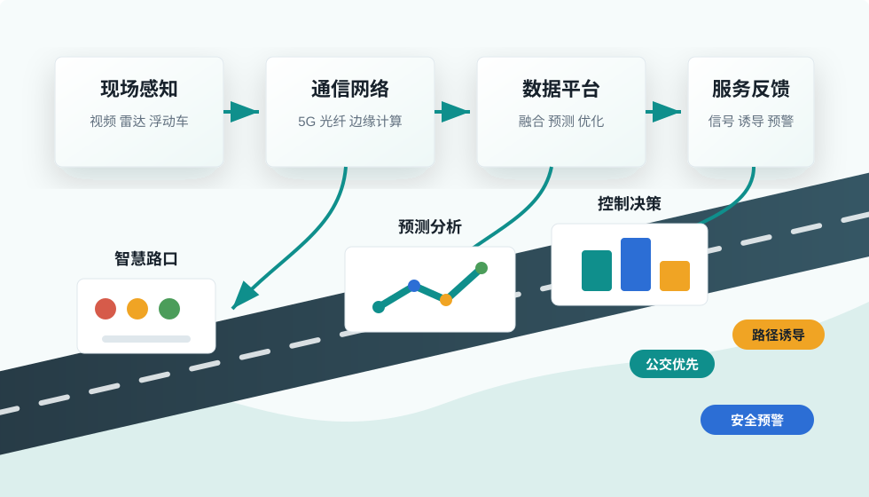

交通运行感知
通过视频、雷达、地磁、浮动车、手机信令等数据识别拥堵、事故、流量和速度变化。
智能交通 · 数据工程 · 控制优化
面向城市交通治理、综合运输服务和车路协同系统，培养既懂交通运行规律， 又能使用数据、通信、控制和软件工程方法解决复杂交通问题的复合型工程人才。
Overview
交通信息工程把交通工程、计算机技术、通信网络、自动控制和人工智能结合起来， 重点研究交通状态感知、信息处理、运行控制、出行服务和交通系统安全。
通过视频、雷达、地磁、浮动车、手机信令等数据识别拥堵、事故、流量和速度变化。
利用统计建模、机器学习和时空数据分析，支撑预测、评价、诊断和辅助决策。
围绕信号配时、公交优先、路径诱导、枢纽调度等场景提升系统运行效率。
面向智能网联汽车与智慧道路，构建感知、通信、计算和服务协同的交通基础设施。
System View
专业训练强调完整工程链路：现场设备采集数据，通信网络传输信息，平台完成融合分析， 再把控制策略和出行服务反馈到路口、车辆、公交和公众端。

Curriculum
Directions
交通视频识别、毫米波雷达、物联网设备接入、多源数据融合。
时空数据库、流式计算、交通指标体系、可视化监测与预测预警。
交叉口配时、干线绿波、区域协调控制、公交优先与应急保障。
路侧单元、边缘计算、自动驾驶测试、协同感知和安全预警。
Practice
学生通常会参与路口调查、交通仿真、数据清洗、算法建模、系统原型开发和综合课程设计， 在真实或仿真的交通场景中完成工程闭环。
Career
参与交通组织优化、智慧交管平台建设、交通安全评价和城市交通治理。
从事交通数据产品、导航服务、车联网平台、交通算法和系统开发。
支撑综合运输调度、客流预测、运营监测、枢纽协同和物流路径优化。
可在交通运输工程、控制科学、计算机、人工智能等方向继续攻读研究生。